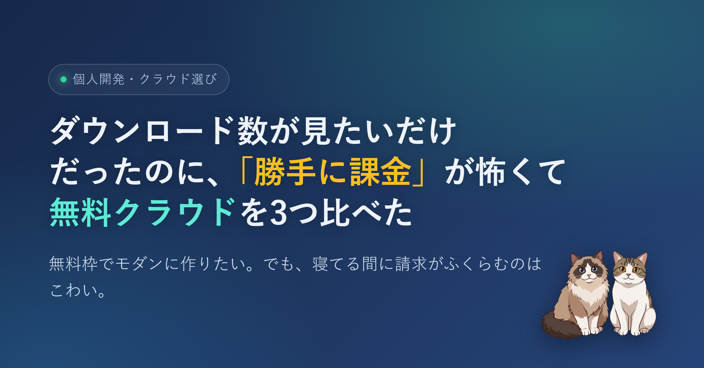

自分の公開ツールのダウンロード数を1画面で集計したいだけだった。なのに途中で Cloudflare の無料枠に寄り道してしまい、最後は「勝手に課金される怖さ」を軸に Cloudflare / Azure / AWS を並べて比べる話になった。機能ではなく「使いすぎたとき何が起きるか」だけを見た記録。
npm のパッケージページに出る週間ダウンロード、GitHub Releases の添付ファイルごとのダウンロード数、Homebrew の公式集計ページ。どれも単体では確認できるけれど、自分の公開物をぜんぶ合計して「今いくつ?」を一目で見られる場所はない。
野良 tap は Homebrew の公式集計に乗らないので、その分は GitHub の数字に合算するしかない。確認のたびに3つのタブを行き来していて、地味に面倒だった。ないなら作ればいい、というだけの軽い動機だった。
プロフィールサイトはすでに GitHub Pages にある。そこに1ページ足せばいい話だ。最初は「取得して保存するなら DB が要るのかな」と身構えたけれど、要件を整理し直して気が変わった。
つまり DB は要らず、JSON をリポにコミットして、ページはそれを読むだけで完結する。完結する はず だった。
ちょうど界隈で、Cloudflare の無料枠で軽量フレームワークの Hono と Workers、SQLite ベースの D1、静的配信までを1つの中に詰め込めるという話をよく目にしていた。フロントも API もデータベースも一箇所で、しかも無料枠で丸ごと試せる。
DL数を数えるだけの用途には明らかにオーバースペックで、定期ジョブと JSON で済む話にサーバーレスと DB を持ち出す理由はない。ただ「無料で最新構成を素振りできる教材」として見ると急に魅力的に見えてきて、手が止まった。
ここで素直な本音が出る。クラウドはこわい。何が怖いかというと、寝ている間に課金がふくらむやつだ。設定をひとつ間違える、あるいは外から叩かれる。気づいたら請求が、みたいな話を何度も見てきた。
実験のつもりが請求書で終わるのは本末転倒で、「無料枠がある」ことと「使いすぎても請求が来ない」ことは、よく考えると全然違う約束だ。そこを軸に Cloudflare / Azure / AWS の3社を、機能ではなく「使いすぎたとき何が起きるか」だけで並べた。
調べていくと3社できれいに性格が分かれた。
結論、Cloudflare の無料プランにした。怖さ最優先という今の自分の前提だと AWS は思想からして逆を向いている。Azure は安全だけど、今回は構成が重くて設定の理解も要る。Cloudflare はクレカを登録しないという一点だけで課金の不安がほぼ消えるし、作りたかったモダンな構成も無料枠でちゃんと試せる。
我慢して機能をケチるのではなく、無料の範囲で最新を全部触れる。これがいちばん腑に落ちた。
比べて、選んで、安心したところでいったん止まっている。次の休みに無料枠の中だけで少し遊んでみるつもりだ。怖いものは根性でなんとかするより、そもそも踏み込まない構造のほうを選んでおく。小さく、課金されない側に立っておく。それくらいの慎重さは、これからも持っていたい。